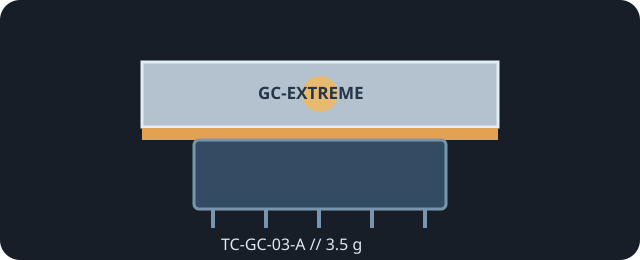

[ INDIVIDUAL COMPONENT // COOLING ]
GELID GC-Extreme 3.5 g
GC-Extreme thermal compound in the 3.5 g package, part number TC-GC-03-A; manufacturer data lists 8.5 W/(m·K).

IDENTIFICATION: Match the 3.5 g package and TC-GC-03-A part number; GELID also sells the GC-Extreme formulation in other sizes.
Manufacturer specifications
| Catalog subcategory | Thermal Accessories |
|---|---|
| Exact model / code | GELID GC-Extreme, 3.5 g; TC-GC-03-A |
| Material | Thermal compound; the referenced data sheets do not disclose the complete formulation. |
| Package / dimensions | 3.5 g net content; package dimensions are not specified in the linked manufacturer sheets. |
| Thermal conductivity | 8.5 W/(m·K), manufacturer data-sheet rating. |
| Electrical properties | GELID describes GC-Extreme as non-electrically conductive and non-corrosive. |
| Additional maker ratings | Density 3.73 g/cm³; operating temperature −45 °C to +180 °C, per the 3.5 g data sheet. |
Application & compatibility cautions
- Use for a paste-specified processor/cooler interface only; it is not a substitute for thickness-matched VRAM, VRM, or SSD pads.
- Apply and clean according to GELID and host instructions. Avoid contaminating sockets and electrical contacts even though GELID states the paste is non-conductive.
- Confirm the mating surface and cooler fit before power-on; renew the compound after the heatsink has been removed.
Manufacturer sources
- GELID Solutions — GC-Extreme 3.5 g specification sheetPackage part number, net content, and technical ratings.
- GELID Solutions — GC-Extreme 3.5 g technical sheetManufacturer's specification sheet for the same 3.5 g package.
This static catalog entry is an identification aid, not a compatibility guarantee; consult the host and current product instructions.